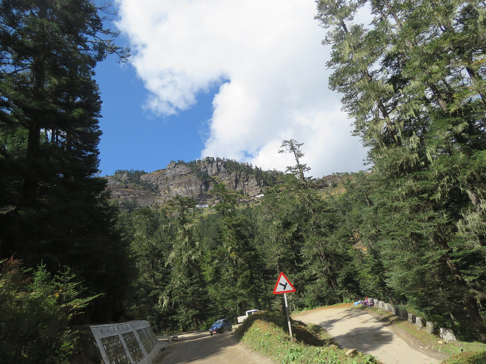
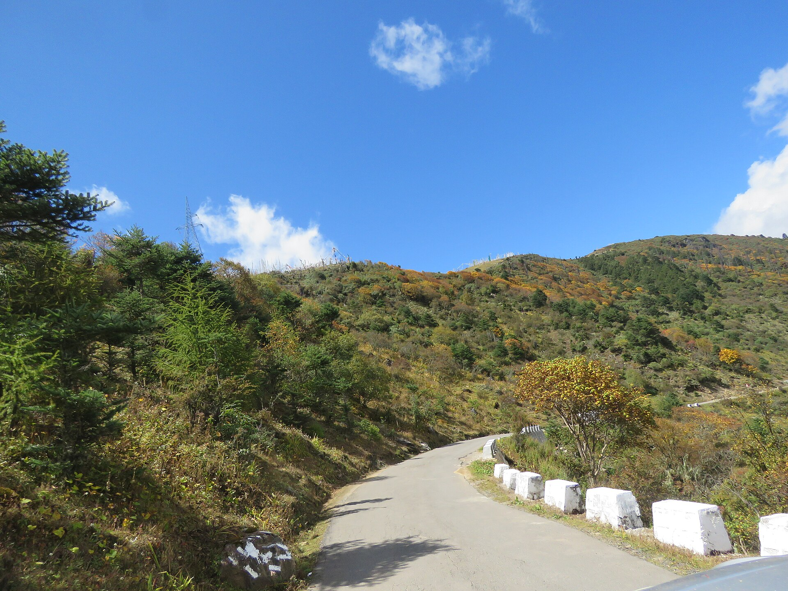
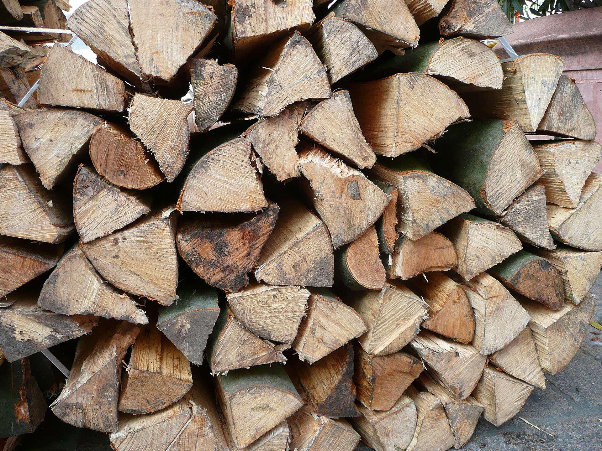
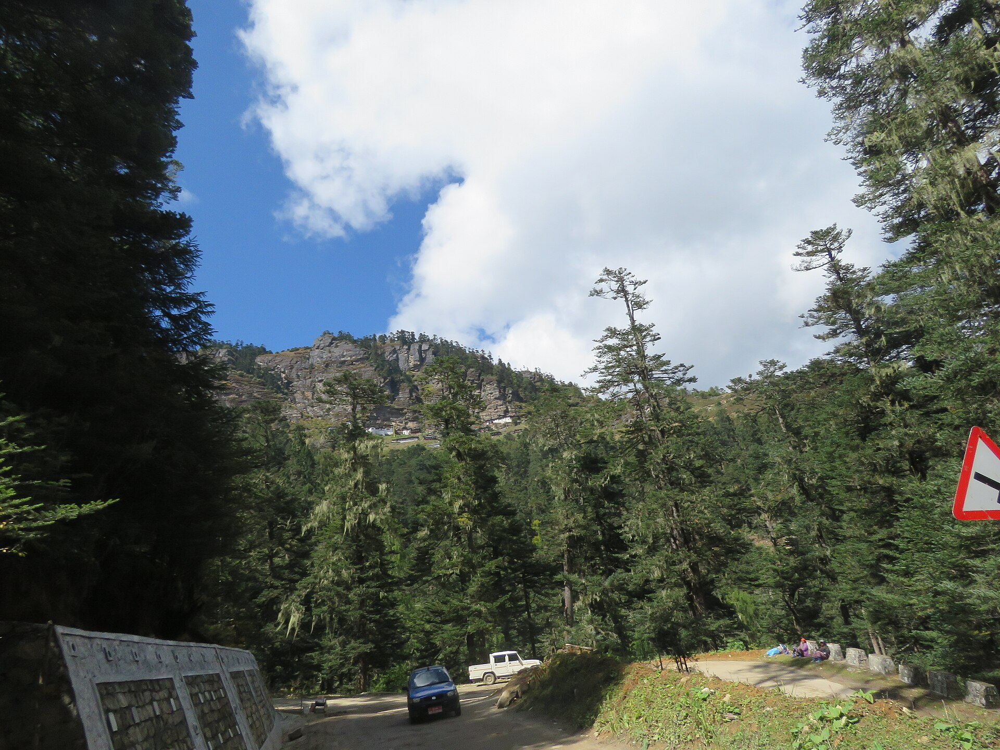

Measurement of
Tree Volume
Stem form · Volume of felled trees and logs · Standing tree volume and volume tables
Royal University of Bhutan
Forest Resources Planning and Management Division
Learning outcomes
Unit V
Every outcome above is examinable. Outcomes 4–7 will be tested as calculations — full working must be shown, not only the final answer.
Why volume carries so many decisions
Unit V
Royalty and auction price in Bhutan are charged on measured volume. An error in the formula is an error in revenue, in both directions.
Annual allowable cut in a Forest Management Unit is a volume. Overestimate the growing stock and the forest is over-harvested.
Increment is the difference between two volume estimates. If the estimates are noisy, the increment is meaningless.
Biomass and carbon are derived from stem volume via wood density and expansion factors. REDD+ reporting starts here.
Household timber entitlements are issued in cubic feet, so the same tree must be convertible between m3 and cft.
Mensuration also estimates biomass, carbon, structure, habitat, regeneration, forest health, NWFP resources and watershed condition. Volume is one major variable, not the sole objective.
Forest cover in Bhutan, as reported in the second National Forest Inventory. Every hectare of it is described, ultimately, by volume figures produced with the methods in this unit.
How the unit is organised
Unit V
What shape is a stem, why, and how do we express that shape as a number?
Given a log I can touch and measure, what is its volume — and which formula should I use?
Given a tree I cannot fell, how do I estimate its volume and how confident can I be?

Vinayaraj · CC BY-SA 4.0.jpg){kind=link}
Tree Stem Form
Form and taper · the four geometric solids · Metzger's girder theory · form factor, form height and form quotient
Stem form and taper
Unit V
Form is the rate of taper of a log or a stem — how quickly the diameter decreases as we move up the tree.
- Taper varies with species, age, site quality, stand density, and even between two stems of the same tree
- A rapidly tapering stem holds less wood for the same DBH and height than a cylindrical one
- Because taper varies, a single formula cannot give accurate volume for every tree
- Form is therefore expressed as a number, so that it can enter a volume equation

Four solids of revolution describe a stem
Unit V

No taper (same diameter).
e.g. some plantation trees

Moderate taper.
e.g. many forest trees

Linear taper.
e.g. conifer trees

Heavy taper.
e.g. buttressed tropical trees
The cross-sectional area of each solid changes with distance from the tip according to a single exponent, r. Everything else in this section follows from that.
Where each form appears in a real stem
Unit V

- No single formula fits the whole stem, so the stem is crosscut into logs and each log is treated as a frustum — a solid with its top cut off.
- A short log deviates less from a simple solid than a long one, which is why logs are usually kept to about 4 – 4.5 m.
- Where the boundaries between the three zones fall differs between species and between open-grown and stand-grown trees. There is no fixed height at which the neiloid ends.
Measure a whole stem as one cone and you underestimate badly — the paraboloid middle holds one half of its enclosing cylinder, a cone only one third.
Metzger's girder theory explains why stems taper
Unit V
A tree stem behaves like a cantilever beam of uniform resistance to bending, fixed in the ground and loaded by wind pressure on the crown.

What Metzger's theory tells a forester to do
Unit V
| Open-grown / exposed tree | Stand-grown / sheltered tree | |
|---|---|---|
| Wind load on crown | High — large crown, full exposure | Low — small crown, mutual shelter |
| Bending moment at base | Large | Small |
| Response of the stem | Thickens at the base; height growth checked | Extends in height; base stays slender |
| Resulting taper | Heavy taper, low form factor | Little taper, high form factor |
| Timber out-turn | Short butt log, rapid diameter loss, low recovery | Long straight logs, high recovery |
Species choice, initial espacement, thinning intensity and thinning timing all change the wind load a stem experiences — and therefore its form. Form is partly something a forester decides.
Plant densely, keep canopy closure, thin lightly and often rather than heavily and rarely, and choose a sheltered aspect — while remembering that genotype sets the limit on what silviculture can achieve.
Three ways of studying stem form
Unit V
Reduce the shape of the stem to a single dimensionless ratio that can be tabulated, averaged and compared.
Group trees into form classes — for example by absolute form quotient — so that one volume table can serve each class.
Record or model the diameter at successive heights, so the whole profile of the stem is described rather than a single number.
Methods 1 and 2 are covered in detail in this unit. Method 3 belongs to taper modelling and is introduced only briefly.
Form factor
Unit V
The form factor is the ratio of the volume of a tree, or of part of it, to the volume of a cylinder having the same length and the same cross-sectional area as the tree.
- V volume of the tree, m3
- S cross-sectional area at the point of measurement, m2
- h height of the tree, m
- f form factor — dimensionless, it has no units
f = 1 means a perfect cylinder. f = 0.50 means the tree holds half the wood of the cylinder that encloses it. Real stems mostly fall between 0.35 and 0.60.

Three classes of form factor
Unit V
| Artificial (breast-height) | Absolute | Normal (true) | |
|---|---|---|---|
| Where the area S is measured | At breast height | At any convenient point, usually the base of the tree | At a constant proportion of total height — 1/10, 1/20 and so on |
| Which volume V refers to | The whole tree, both above and below the point of measurement | Only the part of the tree above the point of measurement | The whole tree above ground |
| Main advantage | Breast height is standardised, so values are comparable between trees and studies | Independent of the breast-height convention; useful for butt-log studies | Geometrically the most defensible — the reference point scales with the tree |
| Main drawback | Breast height is an arbitrary point that means different things on a small and a large tree | The measurement point is not standardised, so values are hard to compare | Total height must be measured first; the measurement point may be out of reach |
| In practice | The one commonly used, and the one assumed in this unit unless stated | Occasional research use | Rare in routine work |
Unless a question says otherwise, "form factor" means the artificial or breast-height form factor.
Worked example 1 · Calculating a form factor
Unit V
A blue pine (Pinus wallichiana) is felled in a plantation at Yusipang. Its stem volume, obtained by measuring every 2 m section, is 1.35 m3. Before felling, its DBH was 40 cm and its total height 22 m.
where S = 0.00007854 × D2, with D in cm and S in m2
Form height
Unit V
Form height is the product of the form factor and the total height of the tree. It is the height of a cylinder of basal area S that would hold exactly the volume of the tree.
- Volume becomes a straight multiplication of basal area by a single number
- Form height is measured in metres, unlike the dimensionless form factor
- Stand volume per hectare = stand basal area per hectare × mean form height
- It tells us how far it is reasonable to assume that volume is proportional to basal area
Two independent routes to the same number is how you learn to trust the algebra.
Form quotient
Unit V
The form quotient is the ratio of the mid-diameter of the stem to the diameter at breast height. Schiffel argued that taper — and therefore volume — depends chiefly on this ratio.
For a tree whose total height is twice breast height — about 2.6 m — half the total height falls at breast height itself, so the mid-diameter is the DBH and FQ = 1 whatever the tree’s real shape. For shorter trees the mid-point falls below breast height and the geometry breaks down altogether. The ratio stops discriminating.
Measured from breast height upward, not from the ground — this is the correction Schiffel's critics introduced.

- Describes stem form with one upper measurement
- More taper, less wood for the same DBH
- The basis of form-class volume tables
Worked example 3 · Form quotient and absolute form quotient
Unit V
A standing hemlock (Tsuga dumosa) has DBH = 40 cm and total height = 24 m. Using a relascope, the upper-stem diameters are read as 26 cm at 12.0 m and 25 cm at 12.65 m.
Form factors for nine commercial species in Bhutan
Unit V
| Species | Common name | Group | Mean form factor f |
|---|---|---|---|
| Pinus wallichiana | Blue pine | Conifer | 0.548 |
| Abies densa | Fir | Conifer | 0.493 |
| Tsuga dumosa | Hemlock | Conifer | 0.491 |
| Picea spinulosa | Spruce | Conifer | 0.490 |
| Pinus roxburghii | Chir pine | Conifer | 0.479 |
| Castanopsis tribuloides | Chestnut | Broadleaf | 0.458 |
| Quercus lamellosa | Oak | Broadleaf | 0.436 |
| Quercus glauca | Oak | Broadleaf | 0.354 |
| Quercus lanata | Oak | Broadleaf | 0.336 |
395 felled trees, sectional volumes by Huber's formula, divided by the volume of the DBH cylinder. Form factors were then modelled with the Pollanschütz function.
Conifers hold their form better than broadleaves. The oaks fork low and spread into the crown, so a large share of their biomass never appears in the stem cylinder at all.
Predicted form factors decline as DBH and height increase, and level off above about 60 cm DBH. This study measured DBH at 1.37 m. DBH reference height is protocol-dependent — Bhutan’s Second NFI used 1.37 m, many international manuals use 1.30 m — so check the convention before applying any published value.
Worked example 4 · Standing tree volume from a published form factor
Unit V
A fir (Abies densa) in a Forest Management Unit at 3,200 m has DBH = 55 cm and total height = 28 m. No local volume table is available. Estimate its stem volume using the published mean form factor for the species, f = 0.493.
The enclosing cylinder holds 6.652 m3. Roughly half of it is wood. That is what a form factor of about 0.5 means.
Uses and kinds of form factor · Section A recap
Unit V
- Estimating the volume of standing trees, singly or by stand
- Studying the laws of growth — with form point and form quotient it describes how stem shape develops with age and treatment
- Converting basal area to volume in rapid stand assessment
- Tree form factor — the whole tree including branches
- Stem timber form factor — the merchantable stem only
- Stem small-wood form factor — the small-diameter upper stem
Each answers a different commercial question.
A taper table lists diameter at successive heights for a species and size class. A taper equation does the same thing as a continuous function, so volume to any merchantable top can be integrated. Modern inventory increasingly uses these.

Vinayaraj · CC BY-SA 4.0.jpg){kind=link}
Volume of Felled
Trees and Logs
Crosscutting · sectional areas · Smalian, Huber and Newton · the quarter-girth formula · bark, stacks and small wood
What "tree volume" means
Unit V
- Felled trees — every part can be reached and measured
- Standing trees — only DBH and height are directly measurable
For a felled tree, volume may refer to:
- Over bark or under bark
- Total or merchantable
- To a stated top diameter, e.g. to a 10 cm top
- Solid or stacked
- Green or seasoned
A volume figure without its qualifiers is not a usable number.
royalty, auction, contract
equations, growth models
annual allowable cut
the difference between two estimates
Volume is the most consequential single variable in this module — and it is one of several. Growing stock, biomass, carbon, structure, habitat, regeneration and forest health are all built from the same measurements.
Crosscutting the stem into logs
Unit V

A whole stem is not measured as one solid. It is crosscut, and each log is measured separately.
A long piece departs far from any simple solid. Short pieces behave much more like a true frustum.
The more a stem tapers, the shorter the logs must be for the geometry to hold.
Buyers specify lengths — sawlogs, poles, sleepers, pulpwood all differ.
Truck bed length, road width and switchback radius all set a practical maximum.
Rot, forks, spiral grain and sweep are cut out at the log stage, not later.
Sectional measurement is how true volume is established for building volume equations.
Notation for a log
Unit V

| S | sectional area at the base of the tree |
| S₁ | sectional area at the thick end of the log |
| Sₘ | sectional area at the middle of the log |
| S₂ | sectional area at the thin end of the log |
| l | length of the frustum, or height of the solid |
A frustum is what remains of a solid when the tip is cut off by a plane parallel to the base — the basal part. Every log is a frustum. Only the very top piece of a tree is a complete solid with an intact tip.
Diameters are taken over bark unless the log has been debarked; state which, every time.
Volume formulae for the four solids
Unit V
| Form | Volume of the full solid | Volume of the frustum | Name of the frustum formula |
|---|---|---|---|
| 1. Cylinder | S l | S l | — |
| 2. Paraboloid | S l / 2 | [ ( S₁ + S₂ ) / 2 ] l | Smalian's formula |
| Sₘ × l | Huber's formula | ||
| 3. Cone | S l / 3 | [ ( S₁ + S₂ + √(S₁S₂) ) / 3 ] l | — |
| 4. Neiloid | S l / 4 | [ ( S₁ + 4Sₘ + S₂ ) / 6 ] l | Prismoidal or Newton's formula |
S l, then divided by 2, by 3, by 4 — as the exponent r rises from 0 to 3, the solid holds a smaller share of its enclosing cylinder.
It is exact for the cylinder, the paraboloid, the cone and the neiloid — every solid in the table. Smalian's and Huber's are exact only for the paraboloid.
Smalian, Huber and Newton compared
Unit V
| Smalian | Huber | Newton (prismoidal) | |
|---|---|---|---|
| Measurements needed | 2 — both end sections | 1 — the mid section | 3 — both ends and the middle |
| Formula | [(S₁ + S₂)/2] l | Sₘ l | [(S₁ + 4Sₘ + S₂)/6] l |
| Exact for | Paraboloid frustum only | Paraboloid frustum only | Cylinder, paraboloid, cone and neiloid |
| Typical bias on a real log | Overestimates | Underestimates, by about half of Smalian's error | Effectively unbiased |
| Works on stacked logs? | Yes — only the ends are needed | No — the middle is buried | No — the middle is buried |
| Main use | Log scaling at depots and roadside | Sectional measurement of felled stems | Research and reference measurement |
Newton is the most accurate and the least practical. Huber is accurate and needs an accessible mid-point. Smalian is the least accurate and the only one that works on a stack — which is why it is the one most used.
Worked example 5 · One log, three formulae
Unit V
A 4.00 m spruce (Picea spinulosa) log is measured over bark. Thick end 46 cm, mid-point 40 cm, thin end 34 cm. Compute the volume by all three formulae and compare.
Sₘ = 0.00007854 × 402 = 0.125664 m2
S₂ = 0.00007854 × 342 = 0.090792 m2
= (0.256983 / 2) × 4.00
= 0.128492 × 4.00
= (0.759639 / 6) × 4.00
= 0.126606 × 4.00
Taking Newton as the reference, Smalian is 1.49 % high and Huber 0.75 % low — Smalian's error is about twice Huber's, and in the opposite direction. On a single log this is small change. On 5,000 m3 of annual harvest, a 1.5 % bias is 75 m3.
True volume from girth
Unit V
In the field a tape measures girth, not diameter. The volume formula must therefore be rewritten in terms of girth, g.
- A girth tape goes round the stem and needs no callipers, no assumption about which axis to measure, and no second reading at right angles.
- On an irregular or fluted stem, girth is also more repeatable between observers than a calliper diameter.
- The cost is that girth assumes a circular cross-section. For a stem that is genuinely elliptical, girth-derived area is biased upward.
This derivation gives the TRUE volume. The next slide shows what happens when the field convention replaces π with 4.
The quarter-girth formula
Unit V
The quarter-girth or Hoppus formula replaces π with 4, which makes the arithmetic doable without a calculator — at the cost of a known, systematic under-measurement.
QGV / TV = π / 4 = 0.7854
The quarter-girth volume is 78.5 % of the true volume.
- Quarter girth is the girth divided by four, which a tape can be printed to read directly. Squaring it and multiplying by length is arithmetic anyone can do in a notebook.
- The 21.5 % shortfall was historically defended as an allowance for the slab wood lost when a round log is squared for sawing.
- Because the shortfall is constant, prices adjusted to it, and buyers and sellers were not disadvantaged so long as everyone used the same rule.
- It is a convention, not a measurement. Never call a quarter-girth figure the volume of the log.
Worked example 6 · True volume against quarter-girth volume
Unit V
A chir pine (Pinus roxburghii) log is 4.00 m long. Its girth at the mid-point, measured over bark with a tape, is 125 cm.
Working in cubic feet
Unit V
The Department of Forest and Park Services expresses the true volume equation in a form field staff can use directly, with girth in inches and length in feet.
- The true volume equation is V = g2 l / 4π
- Girth is now in inches but length in feet, so the two are not in the same unit
- G2 is in square inches; to convert to square feet, divide by 122 = 144
- So the denominator becomes 4π × 144 = 12.566371 × 144 = 1,809.56
- Rounded to 1809.5, giving volume in cubic feet directly
1809.5 already contains 4π. If a quarter-girth figure in cft is wanted, the divisor is 144 × 16 = 2,304 instead.
| Convert | Multiply by |
|---|---|
| m3 → ft3 | 35.3147 |
| ft3 → m3 | 0.0283168 |
| cm → inches | 0.393701 |
| inches → cm | 2.54 |
| m → feet | 3.28084 |
| feet → m | 0.3048 |
| m3 → litres | 1,000 |
| m3 → cm3 | 1,000,000 |
Older Bhutanese working plans, timber trade records and rural timber allotments are in cubic feet. Conversion is not optional.
Worked example 7 · Cubic feet, with a metric cross-check
Unit V
A log is measured at a depot. Mid-girth over bark = 50 inches, length = 12 feet. Compute the true volume in cubic feet, then verify the answer by working the same log in metric.
Bark volume
Unit V
- In some species the bark itself is the valuable product — Acacia species have been used commercially for tannin
- In every species the bark must be deducted before timber volume is reported, because bark is not sawable
- Under-bark diameter is obtained either by measuring a debarked log, or by subtracting twice the bark thickness
Cub = π × Dub or Cub = Cob − 2πb
b is the bark thickness on one side, measured with a bark gauge. It must be doubled, because the tape or calliper crosses the bark twice.
Dob = 42 cm, b = 1.5 cm. 2b = 3 cm, so Dub = 39 cm.
Cub = π × 39 = 122.5 cm, and Cob − 2πb = 131.9 − 9.4 = 122.5 cm. The two routes agree.

Branch wood and firewood · stack volume
Unit V
Branch wood and firewood are crooked, knotty and of many sizes. Measuring every piece as a frustum is not worth the labour, so the material is stacked and the stack is measured.
The stacked volume includes the gaps between billets. To obtain solid wood volume the stacked figure is multiplied by a stacking factor — typically around 0.6 to 0.7 for split, well-stacked billets, and lower for round, crooked branch wood.

{kind=link}
Solid volume of small timber and firewood
Unit V
Where the product is valuable enough to justify the effort, solid volume can be measured directly rather than derived from a stack.

Submerge the piece in a graduated vessel. The volume of water displaced is the solid volume of the wood.
Worked check (hypothetical): the level rises from 2,400 cm3 to 3,150 cm3, so V = 750 cm3 = 0.00075 m3.
V = 1,850 / 0.62 = 2,983.9 cm3 = 0.00298 m3
The weight and the specific gravity must refer to the SAME moisture condition — green weight with green density, or oven-dry with basic density. Mixing them is the standard error.
Root wood, charcoal, and Section B recap
Unit V
- Worth measuring only where the root is itself valuable. The classic examples in the older literature are Dalbergia latifolia, Santalum album and Acacia catechu.
- Roots are irregular; xylometry or the specific gravity method is normally used.
Estimated from:
- the volume of the charcoal kiln
- the amount of wood burnt, converted by a yield ratio
- weighing
- counting standard containers — baskets, gunny bags
- Match the effort to the value. A sawlog justifies three careful diameter readings. A load of branch wood does not.
- The more valuable the product, the more direct the measurement should be.

Vinayaraj · CC BY-SA 4.0.jpg){kind=link}
Standing Tree Volume
and Volume Tables
Ocular and instrumental estimation · volume tables and their classification · general, regional and local tables · Bhutanese practice
Four ways to estimate the volume of a standing tree
Unit V
| Method | What is done | Strengths | Limitations |
|---|---|---|---|
| 1. Ocular estimate | The estimator judges the volume by eye, from experience alone | Instantaneous; no equipment; useful for rapid reconnaissance | Only reliable in very experienced hands; great practice needed. Not practised in Bhutan |
| 2. Partly ocular, partly measured | DBH and height are measured; the taper is judged by eye and volume estimated from it | Faster than full measurement; more disciplined than pure ocular | Still depends on skilled judgement of taper. Not followed in Bhutan |
| 3. Direct measurement | Diameters are measured at several heights by climbing the tree | Removes guesswork; gives a near-true volume | Slow, tiring and hazardous; impractical on tall or large trees; damages bark |
| 4. Indirect measurement | Upper-stem diameters are read from the ground with an optical dendrometer such as the relascope | No climbing; several heights measured quickly; reasonably accurate | Instrument cost and training; needs a clear line of sight through the canopy |
Volume of standing trees is obtained from DBH and height using volume tables or volume equations — which is method 4's logic applied at the scale of a whole forest.
The volume table
Unit V
A volume table shows, for a given species, the average contents of trees, logs or sawn timber for one or more given dimensions.
Each additional variable buys accuracy and costs field time.
That trees of the same species with the same dimensions hold the same volume.
Tables are built from actual measurements of a large number of representative trees, so this assumption holds on average — not for any single tree.
determining the volume of standing trees, and of stands
actual measurements on a large number of representative trees
finding the volume of a single individual tree with confidence
a table is specific to a species, a locality and a region, and cannot be transferred
Choosing how many variables
Unit V
Tree volume depends chiefly on three variables: diameter, height, and form. Which of them a table uses is decided by simplicity, speed of work, and the accuracy actually required.
Adequate within a small locality or a single stand, where trees of a given diameter tend to share a similar height and form.
Fastest. Least accurate. This is what a local volume table is.
Necessary over larger areas, where locality factors vary and trees of the same diameter no longer share a height.
The standard compromise. This is what a general volume table is.
The most accurate, but three field measurements per tree, and form is the hardest of the three to obtain.
Expensive to build, slow to use. Rarely justified.
The whole purpose of a volume table is ease and rapidity. A table that demands three field measurements per tree has surrendered the advantage it was built to provide — which is why three-variable tables are rare in routine use.
Classification of volume tables
Unit V
a) Single variable — usually diameter alone. Shows average volume by diameter class. Usable only in a small locality, so it is called a LOCAL volume table. Quick, because only DBH is measured.
b) Two variables — diameter and height. Shows average volume by diameter class and height class. Applicable to larger areas, so it is called a GENERAL volume table. Local tables are usually derived from it.
c) Three variables — diameter, height and form. Called a FORM CLASS volume table. More accurate, but expensive to prepare and slow to apply.
a) General volume table — based on the average volume of trees growing over a large geographic area; uses DBH and height; used to derive local tables.
b) Regional volume table — compiled from trees growing in one region; more limited application than a general table.
c) Local volume table — made from trees in a restricted locality, usually based on DBH alone or derived from a general table; used to estimate the volume of a standing tree before felling.
Tables may give total stem volume, merchantable volume to a stated top diameter, sawn timber out-turn, or volume by product class — sawlog, pole, firewood.
The out-turn convention must be read before the table is used. Two tables for the same species can differ by 20 per cent simply because one is total and the other merchantable.
General volume table against local volume table
Unit V
| General volume table | Local volume table | |
|---|---|---|
| What it tabulates | Average height, diameter and volume | Average diameter and volume only |
| Assumption | Trees of a species with the same height and diameter have the same volume | Trees of a species with the same diameter in this locality have the same height, and therefore the same volume |
| Data base | Trees growing over a large geographic area | Trees growing in a small restricted area |
| Range of application | A wide range of the species' distribution | A small area of the species' distribution |
| Independent variables | Usually more than one — DBH, height, sometimes form | One — DBH |
| Direct application | Limited; mainly a source for deriving local tables | Directly applicable in the area it was designed for |
| Main use | Deriving local volume tables | Estimating the volume of individual trees or stands |
| Usually prepared from | Felled trees | Felled trees, or derived from a general table; can also be built from standing trees |
| Precision in its own area | Wider confidence interval — less precise locally | Narrower confidence interval — more precise locally |
Reading a general volume table
Unit V
| DBH (cm) | Height 17 m | Height 23 m | Height 29 m |
|---|---|---|---|
| 15 | 0.030 | 0.068 | 0.106 |
| 20 | 0.114 | 0.182 | 0.250 |
| 25 | 0.222 | 0.329 | 0.435 |
| 30 | 0.355 | 0.508 | 0.661 |
| 35 | 0.512 | 0.720 | 0.929 |
| … | … | … | … |
| 95 | 7.343 | 8.879 | 10.415 |
| 100 | 8.145 | 9.847 | 11.549 |
A tree has DBH 30 cm and height 26 m. The table has no 26 m column, so interpolate linearly between 23 m and 29 m.
Difference: 0.661 − 0.508 = 0.153 m3 over 6 m
26 m is exactly halfway, so add half:
V = 0.508 + 0.153 × (3 / 6) = 0.508 + 0.0765
V = 0.5845, say 0.585 m3
If the sample plot contains 40 trees in the 30 cm class at about 26 m tall:
Do not extrapolate beyond the table's range, and do not interpolate across a species boundary.
Volume tables and volume equations in Bhutan
Unit V
General volume equations and local volume tables were constructed for more than twenty species during the Preinvestment Survey of Forest Resources, carried out for Bhutan by the Government of India. Regression forms tried included V = a + bD2, polynomial forms in D, and logarithmic forms such as log V = a + b log D.
Report on Preinvestment Survey of Forest Resources in Southern Bhutan, Dehra Dun, 1981
Local volume tables were developed by the Forest Resources Development Division, Department of Forests, and have since been applied in other parts of the country.
cited in Tenzin et al. (2016)
Form factor functions were fitted for nine commercial species from 395 felled trees, addressing known defects in the older equations — including negative predicted volumes for small trees of some species, and a single equation shared by two different species.
Tenzin, Wangchuk & Hasenauer (2016), Forestry
Field data were collected from cluster plots on a systematic 4 km × 4 km grid; results were published as the National Forest Inventory State of Forest Report.
National Forest Inventory Volume I: State of Forest Report, June 2023
Before applying any of these in official work, confirm the current position with the Department of Forests and Park Services. Volume equations and inventory conventions are revised between inventory cycles.
Sources of error in volume estimation
Unit V
- Tape stretched, kinked or misread
- Calliper arms not parallel
- Clinometer out of calibration
- Relascope band width wrong for the distance
- Weighing scale not zeroed
- Tape not horizontal, or twisted round the stem
- Measuring from the downhill side on a slope
- Reading the wrong scale on the instrument
- Rounding at every step instead of at the end
- Recording cm where the sheet wants mm
- Buttresses, flutes and swellings at the measuring point
- Leaning, forked or multi-stemmed trees
- Elliptical rather than circular cross-section
- Bark thickness varying round the stem
- Hidden internal rot
- Dense understorey blocking the line of sight
- Rain, mist and low light
- Wrong formula for the solid — Smalian on a butt log
- Volume table used outside its locality or range
- Mean form factor applied to a single tree
a written protocol · crew training and cross-checking · instrument calibration at the start of each day · marking the measurement point · repeat readings at right angles · independent re-measurement of 5–10 % of trees · range checks when data are entered
Ten mistakes that cost marks and cost money
Unit V
Nine of these ten are arithmetic or convention errors, not conceptual ones. That is where the marks go.
Field practical
Unit V
To obtain the volume of one felled blue pine by sectional measurement, and to compare it with the volume the Department’s Model 16 merchantable-volume equation predicts for the same tree from its DBH and height.
Two pages. Method, data sheet, calculations in full, the three volume figures, absolute and percentage differences against the sectional volume, and a paragraph separating definitional difference from model and measurement error. State whether your tree lies inside the equation’s calibration range.
Felling is carried out only by the authorised crew. Students remain at a minimum of two tree lengths until the tree is on the ground and the crew signals that it is safe to approach.
Field data sheet · sectional volume of a felled stem
Unit V
| Plot / tree ID | Date | Crew | |||
| Species | Locality | Weather | |||
| DBH over bark (cm) | Total height (m) | Instrument |
| Section | From (m) | To (m) | Length l (m) | Mid-diameter over bark (cm) | Bark thickness b (cm) | Mid-diameter under bark (cm) | Sₘ (m2) | Volume = Sₘ × l (m3) | Remarks |
|---|---|---|---|---|---|---|---|---|---|
| 1 | |||||||||
| 2 | |||||||||
| 3 | |||||||||
| 4 | |||||||||
| 5 | |||||||||
| 6 | |||||||||
| 7 | |||||||||
| 8 | |||||||||
| 9 | |||||||||
| TOTAL |
Classroom exercise
Unit V
Calculate the artificial form factor and the form height.
Compute its volume by Smalian's, Huber's and Newton's formulae and comment on the differences.
Give its true volume and its quarter-girth volume, and state the percentage shortfall.
Estimate the stem volume in m3 and in cubic feet.
Estimate the growing stock per hectare, and give two reasons why the true figure will differ.
Show every step. An answer without working scores zero, and an answer with working but an arithmetic slip scores most of the marks.
Classroom exercise · answers
Unit V
S h = 0.101788 × 21 = 2.137547 m3
f = 1.02 / 2.137547 = 0.4772 · Fh = 0.4772 × 21 = 10.021 m, check V/S = 1.02/0.101788 = 10.021 m
Smalian = [(0.212372 + 0.113411)/2] × 4.5 = 0.733012 m3
Huber = 0.159043 × 4.5 = 0.715694 m3 · Newton = [(0.212372 + 0.636172 + 0.113411)/6] × 4.5 = 0.721466 m3
Huber −0.80 %
against Newton
QGV = (1.40 / 4)2 × 5.0 = 0.352 × 5.0 = 0.1225 × 5.0 = 0.6125 m3
QGV = 0.6125 m3
shortfall 21.5 %
S h = 0.180956 × 27 = 4.885812 m3
V = 4.885812 × 0.548 = 2.677425 m3 · in cubic feet: 2.677425 × 35.3147 = 94.55 cft
= 94.6 cft
Stand = 260 × 0.881454 = 229.18 m3 over 12 ha = 19.10 m3 per ha
All working carried to six decimal places and rounded once, at the end. Question 3's shortfall is exactly π/4, as it must be.
Volume equations in use in Bhutan
Unit V
The pre-investment survey equations of 1974–81 predict total tree volume. When the Department changed rural timber allotment for house construction from a number of trees to a volume of logs, a total-volume equation could no longer answer the question being asked. The measurement followed the policy.
- Trees of 10 cm DBH and above
- Sections up to a 10 cm top diameter over bark; the tip above that is discarded
- Branches and foliage excluded — this is log volume, not tree volume
249 blue pine felled across four regions and the FMUs of Paro, Thimphu and Haa, sectioned at 1 m, each section scaled by Smalian and the terminal section as a cone — the formulae of Section B, applied 249 times.
( )+ means cube it only if the bracket is positive, otherwise zero. The knots are the 10th, 50th and 90th percentiles of the predictor. BA = πd2/4 in m2; BAH = BA × h.
mean tree 34.9 cm, 18.7 m, 1.52 m3 · n = 249
A table and an equation are the same relationship in two notations, and one rule governs both: work inside the range that was sampled and never extrapolate beyond it. The equation is the more honest of the two, because it states its range on the same page. FRMD 2018
Worked example 10 · the same blue pine, three ways
Unit V
Worked example 1's blue pine: DBH 40 cm, height 22 m, sectional stem volume 1.35 m3, form factor 0.488.
Every 2 m section scaled and summed. The reference figure, because nothing in it is estimated.
total stem, over bark
total stem, estimated from a species mean
merchantable, to a 10 cm top
1 and 2 estimate total stem volume over bark; 3 estimates merchantable volume to a 10 cm top, branches excluded. The 0.18 m3 between them is the top of the stem, which that standard discards — not error. Before comparing two volume figures, ask what each of them includes.
Worked example 11 · model against a felled tree
Unit V
A Pinus wallichiana from the study’s own sample: DBH 54.1 cm, height 23.4 m, and a field-measured merchantable volume of 2.109 m3 obtained by sectional measurement. How well does each model reproduce it?
− 0.00164(40.489)
Error against the felled tree: +6.1 %
+ 390.5079(0.003638)
Error against the felled tree: +37.9 %
That gap is what one height measurement is worth.
- Is 6.1 % acceptable for one tree — say, a rural timber allotment?
- Would the same 6.1 % be acceptable for a stand estimate?
- Is the error random or systematic? What would you need to see to decide — and can one tree tell you?
- Does this tree lie inside the calibration range? Check it rather than assume it
If the model is unbiased and this tree merely sits above the line, over- and under-estimates partly offset across many trees. If the model runs high for blue pine in this region, every tree is high and so is the stand total — summation does not repair a bias. One tree cannot tell you which case you are in.
Validity and limitations of the Bhutan model
Unit V
| Species | Pinus wallichiana only |
| Predicted quantity | Merchantable stem volume, m3 |
| Minimum DBH | 10 cm |
| Merchantable top | 10 cm diameter over bark |
| Excluded | branches and foliage; the tip above the 10 cm top |
| Sample | 249 felled trees |
| Geographic basis | 214 of the 249 from Thimphu, Paro and Haa |
| Fitted DBH range | about 10 – 128 cm |
| Inputs and units | BA in m2; h in m; BAH in m3 |
- Total tree volume — the whole stem to the tip, sometimes branches too
- Merchantable stem volume — this model: to a 10 cm top, no branches
- Biomass — oven-dry mass, a different quantity in different units, from the equations of Unit VI
A difference between two of these is not error. It is a difference of definition.
Eighty-six per cent of the fitting trees came from the western valleys. A blue pine in Bumthang or Trashigang may carry a different form for the same DBH and height. The equation will still return a number, and nothing in the arithmetic will warn you.
A 140 cm stem is outside the fitted range. Beyond its outer knot a cubic spline is unconstrained and can run away. Interpolate; do not extrapolate.
The equation has its own error, and it does not shrink when you measure more trees with it. Only a better model reduces it.
Errors in d and h propagate into BAH before the model sees them — and d enters squared.
Positive and negative random errors may partly offset in a sufficiently large sample. Shared model bias, site effects, species differences, measurement bias and extrapolation error can remain or accumulate. A stand total is not automatically more accurate than the trees it is built from.
Volume in Bhutanese forest management
Unit V
Volume is the mensuration variable with the most money, and the most law, attached to it.
Household entitlements for house construction are issued as a volume of logs. That policy change is exactly why a merchantable-volume equation had to be built.
The annual allowable cut in a Forest Management Unit working plan is a volume, and it is checked against growing stock and increment.
Species equations fitted on Bhutanese trees replace imported tables — and carry their own species, range and merchantability limits.
What counts as usable wood is a policy definition, not a property of the tree. Change the top diameter and the volume changes without a single tree changing.
A biased volume equation is not a technical curiosity. It decides how much timber a household receives and how much royalty the state collects. Ask who is disadvantaged when the model is wrong high, and who when it is wrong low.
Stem measurement also feeds biomass and carbon accounting, deadwood and habitat-tree assessment, fuelwood and NWFP supply, and the monitoring of forest condition between inventories.
Summary of Unit V
Unit V
- Form is the rate of taper; taper varies with species, age, site and stand density
- A stem is a neiloid at the base, a paraboloid in the middle and a cone at the top
- Metzger's girder theory explains taper as a response to the bending moment from wind
- Form factor f = V / (S h) is the fraction of its enclosing cylinder that a stem fills
- Artificial, absolute and normal form factors differ in where S is measured
- Form height Fh = f × h converts basal area straight into volume
- Form quotient is the ratio of an upper diameter to DBH; the absolute quotient is taken above breast height
- Every log is a frustum, so frustum formulae are what field work uses
- Smalian needs both ends, Huber the middle, Newton all three
- Newton is exact for all four solids; Smalian overestimates, Huber underestimates by about half as much
- True volume from girth is g2 l / 4π
- The quarter-girth formula replaces π with 4 and gives 78.5 % of the true volume
- In cubic feet, true volume = G2 L / 1809.5, where 1809.5 is 4π × 144
- Bark: D under bark = D over bark minus twice the bark thickness
- Stacked volume is L × B × H and must be reduced by a stacking factor to give solid volume
- Standing volume is estimated ocularly, semi-ocularly, by climbing, or with a dendrometer
- A volume table gives the AVERAGE volume for given dimensions, not the volume of one tree
- Tables are classified by variables used, by scope, and by out-turn given
- One variable means local; two means general; three means form class
- A general table is wider; a local table is more precise in its own locality
- Local tables are usually derived from general tables plus a local height–diameter curve
- Interpolate within a table's range; never extrapolate beyond it
Review questions
Unit V
Questions 1 to 6 are short answer. Questions 7 to 10 carry the most marks and require working or a reasoned argument.
References and further reading
Unit V
- Department of Forests and Park Services (2023). National Forest Inventory Volume I: State of Forest Report, June 2023. Ministry of Energy and Natural Resources, Royal Government of Bhutan. [students should consult]
- Tenzin, J., Wangchuk, T. and Hasenauer, H. (2016). Form factor functions for nine commercial tree species in Bhutan. Forestry 89, doi:10.1093/forestry/cpw044. [source of the form factors used in this unit]
- Forest Resources Management Division, DoFPS (2018). Species Specific Volume Equation to Estimate Merchantable Volume: Pinus wallichiana. [the equations on slides 51 and 52 — students should consult]
- UWICER and FRMD, DoFPS (2018). Allometric Biomass Equations: 14 species and 2 general. [the same modelling applied to biomass; carried further in Unit VI]
- Preinvestment Survey of Forest Resources (1981). Report on Preinvestment Survey of Forest Resources in Southern Bhutan, Parts I and II. Government of India, Dehra Dun. [source of the older local volume equations]
- Forest Resources Development Division, Department of Forests (2005). Local volume tables. [tutor reference]
- Department of Forests and Park Services. Current national forest inventory field manual and technical circulars. — the operative authority for field procedure. Where this deck states a general convention and the manual states another, the manual governs.
- Husch, B., Beers, T. W. and Kershaw, J. A. (2003). Forest Mensuration, 4th edition. John Wiley and Sons.
- Avery, T. E. and Burkhart, H. E. (2002). Forest Measurements, 5th edition. McGraw-Hill.
- Chaturvedi, A. N. and Khanna, L. S. (2011). Forest Mensuration and Biometry. Khanna Bandhu, Dehra Dun.
- West, P. W. (2009). Tree and Forest Measurement, 2nd edition. Springer.
- Philip, M. S. (1994). Measuring Trees and Forests, 2nd edition. CAB International.
Where a Bhutanese convention could not be confirmed, this deck presents the general international convention and labels it as such. Students must follow the applicable Bhutanese field manual during official inventory work.
Case study · the volume of the largest stem
Tree 24 of the plot — the largest, and the one a marking officer would look at first. DBH 57.6 cm, height 27.8 m.
- Merchantable stem volume, to a 10 cm over-bark top
- Branches and foliage excluded
- Not the same quantity as a sectional measurement of the whole stem
57.6 cm against a fitted range of about 10–128 cm, and 27.8 m against 4.6–61.3 m. Comfortably inside. Check it; do not assume it.
This one tree holds roughly 3 m3. Unit VI does not sum 24 such calculations — it takes a different route through basal area and crop height — and the two answers will not be identical. Knowing why is the point of the next step.
Notation, units and terminology
Unit V
| Symbol | Quantity | Unit |
|---|---|---|
| d | diameter of one tree | cm |
| C | circumference or girth | cm |
| g | basal area, one tree | m2 |
| G | basal area, stand | m2/ha |
| h | height of one tree | m |
| HL | Lorey’s mean height | m |
| v | volume, one tree | m3 |
| V | volume, stand | m3/ha |
| t | bark thickness, one side | cm |
| B | double bark, B = 2t | cm |
| f | form factor | — |
Upper case is the stand.
That one rule resolves most of the confusion in the literature: g is the tree in front of you, G is the hectare it stands in. Likewise v and V.
Dub = Dob − 2t
Gub = Gob − 2πt
A diameter crosses bark twice. Subtract 2t, never t.
Crown-base height ground to the base of the live crown · crown length H − crown-base height · crown midpoint height ground to the crown midpoint · live-crown ratio crown length ÷ H. The bare term “crown height” is not used — three incompatible meanings.
relascope · calliper · Smythies’ hypsometer · chir pine · breast height · over bark / under bark · merchantable height · bole height
DBH reference height is protocol-dependent. Bhutan’s Second NFI used 1.37 m; many international manuals use 1.30 m. Follow the applicable protocol and record the height used.

Measurement of
Tree Volume
Readings · the supplementary folder
Practical sheets and dates · the VLE
Senior Forestry Officer
Adjunct Lecturer
Forest Resources Planning and Management Division
Royal University of Bhutan